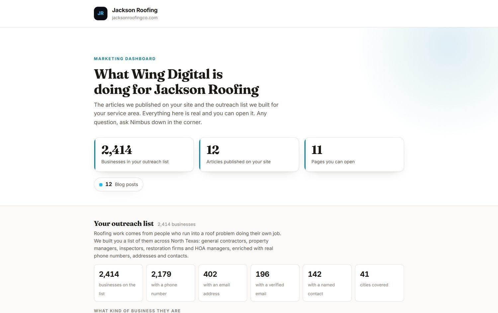
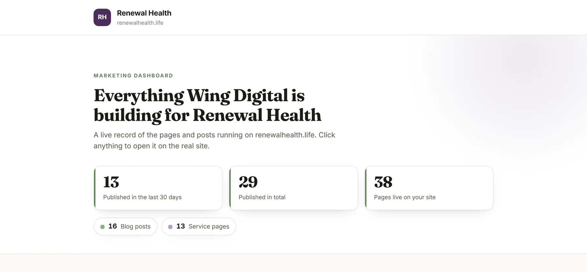
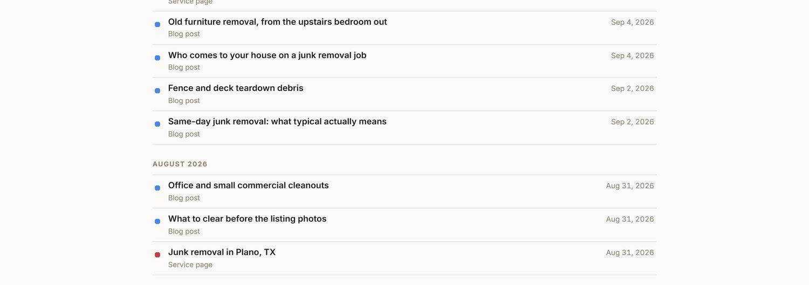

Our work
The whole presence, not just the site.
Three Dallas-Fort Worth businesses whose online presence we build and run. Not the same package: each one gets the parts it actually needs.
Three Dallas-Fort Worth businesses whose online presence we build and run. Not the same package: each one gets the parts it actually needs.
Three clients on the same system, running different parts of it. All three get the local search work and content on a schedule. Jackson also gets a targeted outreach list and a CRM we run so nobody who calls gets forgotten.
Tell us what your business does and where the work comes from now. We recommend only what you need, and we say so when you do not need something.
Design, copy, photos, domain, hosting, and on-page SEO. Or we work on the site you already have. Two weeks from kickoff to live.
Blog posts, city pages, social, and Google Business updates go out on a schedule so your presence keeps growing while you work.
Everything lands on your dashboard as it publishes, so you can check the work yourself at 11pm without asking anyone.
Every client gets a dashboard, and whatever we run for them lands on it as it happens, with a link to open the live thing.

Jackson Roofing. An outreach list of 2,414 North Texas businesses we built for them, alongside 12 articles and 11 live pages. This is the part that is not a website.

Renewal Health. Every page and post we publish, with a link to open it live on their own site.

Hero's Junk Removal. Every post and service page as it publishes, dated, with a link to open it on their own site.
Tell us what you are trying to grow and we will come back within one business day.
Request a free consultation